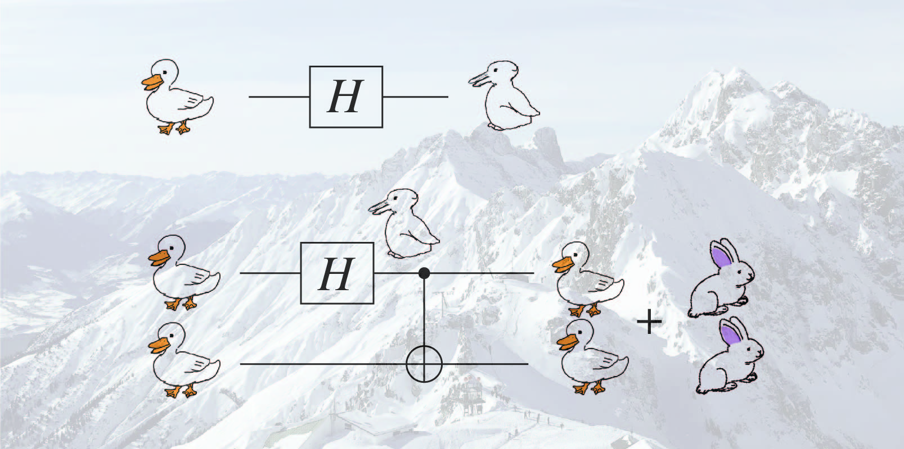

2022年度
資金名称：芝浦工業大学・プロジェクト研究助成 研究課題：複雑ネットワーク上の量子空間探索における普遍性の探究 研究代表：渡部昌平 （芝浦工業大学工学部情報工学科・准教授）
2021年10月-2024年度
資金名称：国立研究開発法人科学技術振興機構 戦略的創造研究推進事業(さきがけ) 研究課題：虚時間量子ツールボックスの開発 研究代表：渡部昌平 （芝浦工業大学工学部情報工学科・准教授）